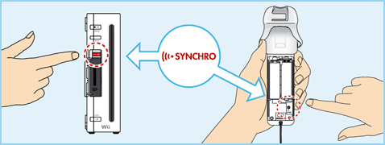

4 |
Utilisation de la manette |
 |


NOTE: si le guide de votre dragonne est muni d’un levier, abaissez-le jusqu’à ce que vous entendiez un clic. Cela permettra au guide de rester en place.
Cette procédure permet à la télécommande Wii de communiquer avec la console. La télécommande Wii fournie avec la console Wii a déjà été synchronisée avec celle-ci. Il existe deux modes de synchronisation différents. MODE STANDARD – La procédure de synchronisation en mode standard sert à ajouter d’autres télécommandes Wii à votre console ou à effectuer une nouvelle synchronisation de votre télécommande Wii. Une fois synchronisée, la télécommande Wii le restera à moins que vous ne modifiiez cette configuration en la synchronisant avec une autre console. MODE TEMPORAIRE – Ce mode vous permet d’utiliser temporairement votre télécommande Wii sur une autre console et d’utiliser la télécommande Wii d’un ami avec votre console. NOTE: seule une télécommande Wii en mode standard peut allumer ou éteindre la console. Synchronisation en mode standard

Cette procédure doit être effectuée à chaque fois que vous ajoutez une télécommande Wii à votre console. NOTE: la fréquence de clignotement des témoins change en fonction de l’état des piles.
Synchronisation temporaire
IMPORTANT: si votre télécommande Wii perd la synchronisation avec la console et que vous n’arrivez plus à les synchroniser, veuillez vous référer à la section "En cas de problèmes" concernant la télécommande Wii du mode d’emploi Wii – Installation de la console. |


 |
 |
 |